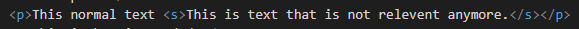

This element defines text that is no longer correct, accurate or relevent. The text will be displayed with a line through.
This should not be used to define text that has been deleted.
This normal text This is text that is not relevent anymore.
This is how its coded:
The global attributes are supported.
The event attributes are supported.